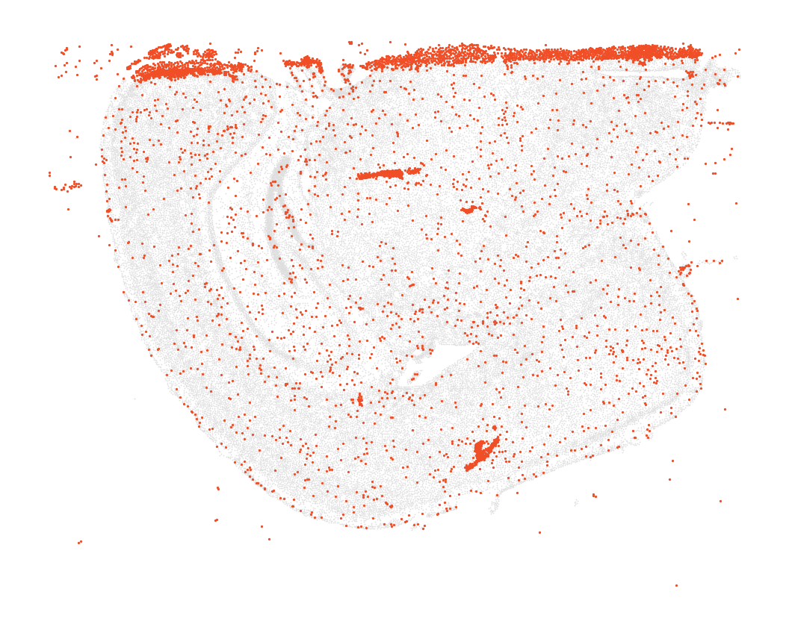

Filtering
Always put the removed cells on the map
Data
QC
Filter
Normalize
Cluster
Markers

removed (5,369)
kept (56,899)
44%
of all removed cells lie in the low-count band along the top edge.
The rest are single bad cells spread over the tissue: what filtering is meant to catch.
Better order: first flag the bad region, then filter single cells.
Data: Practical 2 dataset and cut-offs. Band = top 8% of the section's y range (about 420 µm).